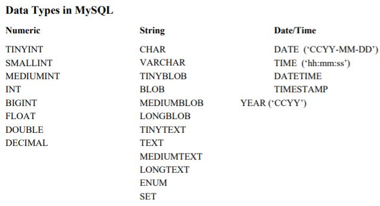
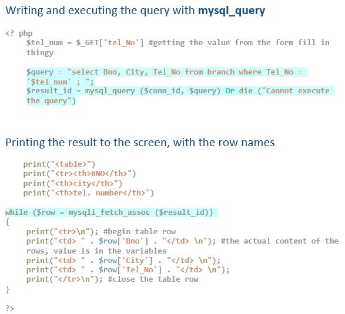

TOPIC 2 - SQL
TOPIC 3 - Views
TOPIC 4 - Database Directory
TOPIC 5.1 - File Support
Sample Paper
Database Specification
Create/ update / insert table
CREATE TABLE students (
id_number CHAR(9) ,
first_name VARCHAR(20),
...
);
DELETE
FROM students
WHERE id number = ’987654321’;
UPDATE students
SET points = 500
WHERE id number = ’112356489’;
INSERT INTO students VALUES ("123456789", "John");
the effect of the CREATE TABLE command is to store a descriptor of the table in the database directory [system catalog]; the effect of ALTER TABLE is to modify that descriptor; the effect of DROP TABLE is to remove the descriptor
CREATE INDEX - WORKS_ON
CREATE INDEX EMPIX ON EMPLOYEE(SSN);
CREATE INDEX WEP ON WORKS_ON(ESSN, PNO);
CREATE UNIQUE INDEX DEPTX ON DEPARTMENT(DNUMBER);
DROP INDEX EMPIX;
Index is a secondary storage item that speeds up queries on the indexed columns. however it slows downs for updates/inserts and deletes. The query optimizer chooses to use the index or not when generating an evaluation plan. INDEXES are not visible to us and are just used to speed up queries.
- INT (3) - displays in column width 3
- DECIMAL (7,2) - displays in “7.2” format
- CHAR (15) - storage 15 characters, padded
- VARCHAR (15) - max storage 15 characters, unpadded
- TEXT/BLOB types are relatively uncommon, as they don’t fit easily into a table structure
Database Directory and Security
SQL CONSTRAINTS
Constraints are used to limit the type of data that can go into a table. This ensures the accuracy and reliability of the data in the table. If there is any violation between the constraint and the data action, the action is aborted. They can be present across the table or just one columns.
-
Common Constraints
- NOT NULL
- UNIQUE - all values in that column are unique
- PRIMARY KEY - combines NOT NULL AND UNIQUE to identify each row
- FOREIGN KEY - a primary key of another table for reference
- CHECK - all values in a column satisfy a specific condition
- DEFAULT - gives a column a default value if left empty
- INDEX - used to create and retreive data from db really quickly.
Referential integrity violation
DML (data Manipulation language) statements like update, insert or delete can cause the table and db to be inconsistent. for example creating a row for an employee with Dno = 50, but there isn't a Department 50 so it cannot be possible to query that employee successfully.
-
How to solve this:
- Choose the people you give permissions to wisely, and trust them and do nothing hoping it will be fine. Easy to do; Disadvantage: DB corruption is almost certain
- Specify Constraints for columns and tables to ensure data is put in properly. Advantage: automated consistency checks, Disadvantage: slower SQL evaluation, and problems with making the queries could arise.
- Use a middle man - PhP to interact with the database, it can do more sanity checks and queries are more consistent. advantage: sophisticated validation of data and commands Disadvantage: Requires time and effort to build.
DCL - Data Control language
GRANT and REVOKE give and take permissions for tables/databases for a specific(named) user.
GRANT/REVOKE - ALTER[table], INDEX[create and drop], SELECT, INSERT, DELETE, UPDATE, ALL
ON - database.tablename (specific table), database.* (all tables in a db), *.* (global all dbs and all
tables)
Creating a new user
Requires a username and a password and a privilege level.
CONNECT : login to DBMS only
RESOURCE: connects and execute DDL statements;
DBA: RESOURCE + GRANT/REVOKE privilege
GRANT RESOURCE
TO white
IDENTIFIED BY SecretPsw;
GRANT SELECT, INSERT
ON companydb.department
TO gray
WITH GRANT OPTION;
/* WITH GRANT OPTION means that the grantee can grant this permission to other users */
Database Directory
Database directory - metadata for data stored. all info about result of user commands and info about validation. It is stored as a relation table. You can have SELECT permissions on the DD table, but only SELECT.
- SYSTABAUTH - contains info on user authorization privileges on tables and views the user has
created or given access to
- Accessible to each user (private copy)
- modified by : CREATE/ALTER/DROP table or view, GRANt/REVOKE (for table auth permission)
- SYSCATALOG - has info of all the table names + who is the creator + if its table or a view
- Accessible to each user (private copy)
- modified by : CREATE/ALTER/DROP table or view, GRANt/REVOKE (for table auth permission)
- SYSCATALOG is superset of CATALOG - it has info on sys tables as well as user tables. Most tables have a SYS counterpart that just stores the sys tables in addition.
- COLUMNS - has info of all columns of a tables/view accessible by a user ( its data type,
width of chars and constraints)
- Accessible to each user (private copy)
- modified by : CREATE/ALTER/DROP table or view, GRANt/REVOKE (for table/View auth permission)
- VIEWS - has all views created by a user ( with the stored view text)
- Accessible to each user (private copy)
- modified by : CREATE VIEW, DROP VIEW, DROP TABLE, GRANT(2), REVOKE(2)
- SYSUSERAUTH - describes all users of the database it has passwords access privileges and
other time stamps
- ONLY DBA privileged users
- modified by GRANt/REVOKE
- DTAB - master index of DD contents, everyone can access it cannot be modified
A view is created from the base DD tables for a private copy of each user, this ensures a user can only see their permissions/tables (catalog).
Command validation
For every command the DBMS performs necessary validations steps many of which include access to DD
tables.
-
CHECKING FOR A SELECT STATEMENT
- Check privilages of tables (FROM clause) in SYSTABAUTH, does this user have permissions
- Is the table a view or base table (check CATALOG). if view activate query modifier.
- are WHERE and SELECT clauses correctly referencing things from FROM clause
- are WHERE and SELECT clauses valid and unambiguous? (check COLUMNS)
- is WHERE clause type compatible? (COLUMNS)
- Now you can compile.
-
CHECKING FOR GRANT STATEMENT
- Does ON clause table exist (CATALOG)
- Does the user have grant option for that permission (SYSTABAUTH)
- Goes Grantee exist ( SYSTABAUTH )
simple SELECT statement on a single table actually requires a potential search of five separate tables (SYSTABAUTH, CATALOG, VIEWS, COLUMNS and the table itself).
-
Techniques to improve efficiency:
- precompiled and highly optimized routines for DD access ( DD queries are not validated)
- DBMS do not use DD views but rather the base tables
- DDs are multiply indexed
- a lot of DD is in memory during DBMS use, reducing access time.
Database Manipulation
Calculation functions
- AVG(expr): average value of expr
- COUNT(*): number of rows in result table
- COUNT(DISTINCT expr): number of distinct rows containing expr
- MAX(expr): maximum value of expr
- MIN(expr) minimum value of expr
- SUM (expr): summation of all values of expr
CONCAT (str1, str2, …): concatenate strings
LEFT (str, len): returns leftmost len characters from string str
LENGTH (str): returns string length
LOWER (str): returns lower-case version of str
REVERSE (str): reverse the string str
RTRIM (str): removes trailing blanks
SOUNDEX (str): returns phonetic sequence of str
UPPER (str): returns upper-case version of str
Find the name of employees earning between $20,000 and $30,000
SELECT Fname
FROM employees
WHERE Salary BEETWEEN 20 000 AND 30 000;
SELECT fname
FROM Employee
WHERE SEX = "M" and
BDATE BETWEEN SUB_DATE(CURDATE(),INTERVAL 21 YEAR)
AND SUB_DATE(CURDATE(), INTERVAL 25 YEAR) ;
Find the identifier and name of employees earning less than $25,000 who work in departments 4 or 5
SELECT Fname, SSN
FROM employees
WHERE Salary < 25000 and Dno in (4,5);
GROUP BY and HAVING
Find the highest salary in each department
SELECT Dno, MAX(Salary)
FROM EMPLOYEE
GROUP BY Dno
Find the highest salary in each department with more than five employees
SELECT Dno, MAX(Salary)
FROM EMPLOYEE
GROUP BY Dno
HAVING COUNT(*) >= 5
JOINS and SUB-QUERIES
Find the name of employees working for the Research Department
SELECT Fname, Lname SELECT Fname, Lname
FROM Employee FROM Employee , Department
WHERE Dno = (SELECT Dnumber WHERE Dno = Dnumber AND Dname = "Research";
FROM Department
WHERE Dname = "Research");
Find the name & address of the lowest-paid employee living in Houston
SELECT fname, lname , address
FROM Employee
WHERE Address LIKE "%Houston%"
AND Salary = (SELECT MIN(Salary) FROM employee WHERE address LIKE "%Houston%");
Find the identifier and address of female employee working on either ‘ProductX’ or ‘ProductY’ projects
SELECT Fname, Lname, Address
FROM Employee, Works_On , projects
ON SSN = ESSN AND Pno = Pnumber
WHERE Pname in ("ProducX","ProductY") AND SEX = "F"
Synchronized Sub-Queries
Find the identifier & name of departments hiring no employees resident in Houston
SELECT Dnumber, Dname
FROM DEPARTMENT D
WHERE NOT EXISTS
( SELECT *
FROM EMPLOYEE
WHERE Address LIKE '%Houston%'
AND Dno = D.Dnumber )
VIEWS
Limitations Of SQL (privacy)
- Security Cannot be for individual columns. You cannot hide a column if granting permissions to a user.
- Sometimes simple data retrieval requires complex SQL query due to design of the SQL table
What are VIEWS?
VIEW - a derived table from a base table ( or more ), Data is not stored on disk but dynamically
produced
when asked.
VIEWS solve the 2 limitations above, by simplifying SQL query statements as a view can combine
one or
more
tables. A VIEW is also treated as a normal db table. Meaning you can give permissions on a VIEW
to a
user.
This allows you to cut out sensitive columns (solving first limitation).
The Database system stores the Query of the VIEW - not the table, meaning any updates to the
base
table/s
are reflected in the VIEW.
Creating VIEWS
Create a view containing information on Houston-based employees of Department 5.
creating a view is a simple as sticking "CREATE VIEW x AS" and follow it with a SELECT
statement.
CREATE VIEW HoustonEmployeesD5 AS
SELECT Ssn, Fname, Lname, Sex, Salary
FROM EMPLOYEE
WHERE Address LIKE ‘%Houston, TX’
AND Dno = 5;
CREATE VIEW HER_1 ( StaffId, Name, Sex, Salary ) AS
SELECT Ssn, CONCAT (Lname, ‘, ‘, Fname), Sex, Salary
FROM EMPLOYEE, DEPARTMENT
WHERE Dno = DNumber
AND Address LIKE ‘%Houston, TX’
AND Dname = ‘Research’
Using the VIEWS - implementation
Treated exactly the same way as normal base tables.
howevery after submitting your query it undergoes - query modification .
The text of the view and text of the user query are merged into a single final query that refers
only to
base tables.
View Definition:
CREATE VIEW MaleStaff AS
SELECT Ssn, Fname, Lname, Bdate, Salary
FROM EMPLOYEE
WHERE Sex = 'M';
User Query
SELECT Fname, Lname
FROM MaleStaff
WHERE Salary > 50000;
Final Query
SELECT Fname, Lname
FROM EMPLOYEE
WHERE Sex = 'M'
and Salary > 50000
View Updatability
Problems arise when trying to use INSERT/UPDATE/DELETE on a view because a view may be many
tables
acting as one, it can be a single table but with only some columns.
beacuse a view is not actual physical data and is derived dynamically, it cannot be updated.
However
some DBMS allows for (it updates the base table through the view) this,but with certain rules.
rules are - single table view, a view has all of the NOT NULL columns, and not function calls
inside the
view creation statement.
Database Programming
- MYSQL_CONNECT - connects to mysql server, 3 params- host, user and password
- MYSQL_QUERY - performs query on db - 2 params - query and database
- MYSQL_NUM_FIELDS - get num fields in query result - query is param
- …..OR DIE('MESSAGE') - exit() and print the message on the screen
- MYSQL_FREE_RESULT - free memory associated with result
- MYSQL_ERROR - returns text of error message from prev operation
- MYSQL_FETCH_ARRAY - fetch result row as associative or numeric array
- MYSQL_FETCH_ASSOC - fetches result row as associative array, rows are accessed by $row['Column Name']
- MYSQL_FETCH_ROW - result row as enumerated rows, rows are accessed by index $row[0]
- MYSQL_CLOSE - closes connection to the database
- MYSQL_SELECT_DB - sets current active db on server
The PHP superglobals $_GET and $_POST are used to collect form-data.
File support
DBMS Storage engine
DBMS do not use in-built File system. They just request data and they have their own native file
system
powered by Storage engine.
storage engine is tuned to cater for specific data retrievals (SELECT). It handles concurrent
access to
file/table data and data conflicts, indexing.
The DBMS file system is specific.
How a hard-drive works
HDD is divited into tracks and sectors ( and Cylinders nad clusters), they are used as storage
bins (of
fixed 512bytes capacity).
To read data from a sector there is a seek delay ( 4-9 ms) and a rotational delay ( 2ms). Its
best if a
file is stored on a single or adjacent, cylinders of disk.
File System - File Manager - Storage Manager
File directory - partly visible and partly hidden for file/disk Administration.
file organisations - serial, sequential and indexed sequential
File allocation
records are packed into a sector ( e.g 4 110Byte records can fit into a sector with
80bytes left
over.)
this is limiting as only serial files are possible and reorganizing files on disk is very
difficult.
sequential files - supported by keeping sectors 66% full (partially filled) and split the
sector
when
insertions cause it to overflow.
Indexed sequential files - supported by keeping the lowest key value of an data sector in
master
sectors
along the data sector pointer. They are called index sectors and form a data structure ( B+
tree) that
supports sparse index, as only one index per sector is made and not one index per record.
On average - validation take sup 80% of the time, and execution itself takes 20%
Sequential File Organisation
Records are stored and accessed in a particular order using a key under which they are sorted
on.
for Retreival - you need to search sequentially through the entire file record by record.
primarily used in apps where there is a high file hit rate. Makes them good for master files and
batch
processing (like payroll systems)
Sometimes when overflow happens, the records are not contiguous anymore but are mapped in such a
way
that they are still retreived win their sequential sorted order despite different physical
location
Serial File Organisation
Records entered in order of their creation , unordered. Serial files are primarily used
as
transaction
files in which the transactions are recorded in the order that they occur
its only used on a serial medium like Magnetic tape. Usually used for transaction files
(unsorted) and
dump files.
to find anything you need to look through all the records.
Indexed - sequential File Organisation
They are the same as sequential files but have an index for a block that contains the record
given a key
value.
Stored and sorted with a primary key, for each primary key an index is generated and mapped to
the
record.
record can accessed either sequentially (in the order they were entered) or randomly
(with an
index)
Sample exam Questions and Answers
What function does a storage engine play in a modern database management system? Why is it
Storage engine is used (tuned) to cater for the specific file access patterns and storage of DBMS. it is specifically tuned for retrieval for SELECT statements, it also handles multiple access to files/tables (concurrent access). It also handles data conflicts.
In what way does the presence of variable-length records within a file impact on the subsequent processing of that file?
DBMS treats the variable length field as a fixed size. This aids access of columns as
records
can
now be accessed at known offsets. ( for example if its known that each record is 100bytes
long
rather than around 100 bytes)
The file system can have predefined index to jump to every time to read a new record
(and
knows
where ite ends).
if the variable length file was stored in a variable fashion, the File System would have to
read it
one by one until it reaches a terminator character signifying the end of the record.
By having it fixed it can skip this and read in the whole record cos it knows where the
terminator
is.
Under what conditions would a serial file suffice for database table storage? What about a sequential file? What about an indexed sequential file?
Serial files are used mainly for storing transactions and they are unordered,
They need to be read 1 by 1 to find any record.
Sequential files are useful for batch processing systems like Payroll systems.
They
are ordered based on a
key.
Indexed-Sequential file are essentially like sequential files but also maintain an index
value and
when given a key you can obtain an index to directly access the sector/block the record is
held in.
They would be useful for identifying files with search systems and accessing more
specific
data.
What is multiple buffering and what role does it play in database query processing?
Multiple processing referes to the idea of having many buffers to hold block of data.
For
query
processing, having multiple buffers allows DBMS to process one record while another
record it
being
brought in. This means that when DBMS is finished processing a record another record
is
already
waiting/ or close to being brought in. This improves performance as it reduces
potential
stalls as
we wait for info to be brought in from disk
unrelated example: for displays one buffer holds the current frame being displayed while
another is
acquiring bits for the next frame. So when it is time to switch the next frame is ready.
Sample Paper Simple Answers
Q1 (a) (i) - 1, 2, 3 can be done with Constraints. 1 - UNIQUE , 2 - FOREIGN KEY , 3 - FOREIGN KEY
(ii) Programming language like PhP or JavaScript can be used to further validate data before
insertions
(b) They are not supported because of unexpected/surprise deletes (maybe sometimes u want to
modify the
data), performance issues (cascading can trigger lots of operations)
Q2 (a) COLUMNS table is modified to reflect added/deleted/modified columns and their constraints
(b) - GRANT SELECT ON Employee TO user123; - affects SYSTABAUTH table to reflect permission
changes for
user123 for employee table.
(c) change to native file system over the years + use of Aliases like "Show tables" or "describe
table"
are used to improve security and reduce interaction with DD tables.
(d ) 1. Check if the Table exists (CATALOG) , 2. Check if the issuer exists and has right
privileges
(SYSTABAUTH) 3. Checks if the user you revoke the permission from exists (SYSUSERAUTH)
(e) Create a VIEW as they have different permissions to base tables.
Q3 (a) Indication for using joins - if the data you want to retreive is spread across more than 1 table
or if data from one table is used to gather data from another table ( like using Dname = "Research" to
find Dnumber so then you can find employees working in that dep.)
/* Find the identity and name of each dependent of an employee working for the
Research department */
SELECT ESSN, Dependent_name
FROM dependent
WHERE ESSN IN ( SELECT SSN
FROM Employee
WHERE Dno = (SELECT Dnumber FROM Department WHERE Dname = "Research")
)
SELECT ESSN, Dependent_name
FROM dependent, Employee, Department
ON ESSN = SSN AND Dno = Dnumber
WHERE Dname = "Research" ;
/* Question 3 (c) */
CREATE VIEW DependEmpDept ( Dependent_name, SSN, Dno) AS
SELECT Dependent_name, SSN, Dno
FROM Employee, Department, Dependent
ON ESSN = SSN AND Dno = Dnumber ;
SELECT Dependent_name
FROM DependEmpDept
WHERE Dno = (SELECT Dnumber FROM department WHERE Dname = "Research");
SELECT Dependent_name
FROM Employee, Department, Dependent
ON ESSN = SSN AND Dno = Dnumber
WHERE Dno = (SELECT Dnumber FROM department WHERE Dname = "Research");
/* (d) */
SELECT Fname, lname
FROM Employee, Department
ON Dno = Dnumber
WHERE Dname = "Research"
AND SSN not in ( SELECT ESSN FROM WORKS_ON)
SELECT Fname, lname
FROM Employee, Department
ON Dno = Dnumber
WHERE Dname = "Research"
AND SSN in (SELECT ESSN
FROM WORKS_ON
GROUP BY ESSN
HAVING COUNT(ESSN) = (SELECT COUNT(*) FROM PROJECT)
)
Some Questions and Answers
PHP can dynamically send HTML to user's browser, how? Give examples
dynamic html - html that is more interactive and can change based on some conditions. PHP can achieve
this by generating a html page based on some conditions. This means that the website might not be
identical across two computers as conditions change and the webpage is dynamic.
example- only showing a section of the page if a user is a registered member. can be achieved (checked
and generated) by php. if ($member == true) { # content just for members here } else # content for
normal visitors
A PHP program that runs correctly when first written might subsequently result in errors, why?
Changes to the database, deletion of rows or any modification can cause a query to fail. Losing